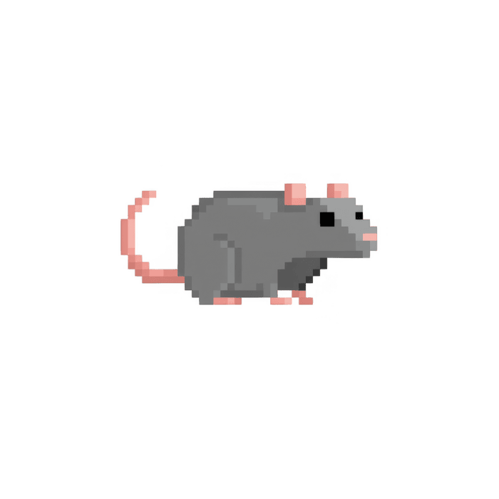

시작

<README.TXT>
안녕하세요.
웹퍼블리셔 지원자 현진명입니다.
포트폴리오를 90년대 마이크로소프트 윈도우 스타일로 제작해보았습니다.
혼자서 만든 세 개의 프로젝트,
공공기관 중심의 실무 프로젝트 경험 등을 각각 아이콘 안에 담았습니다.
깃허브와 데모 라이브 페이지 링크를 통해 보다 자세한 내용을 확인하실 수 있습니다.
감사합니다. (- -) (_ _) (- -)